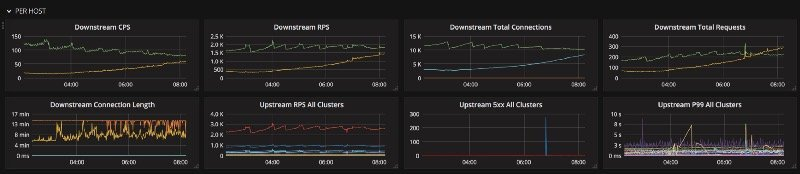
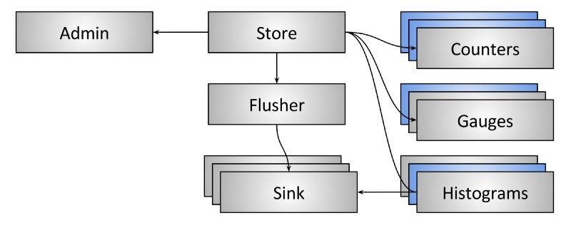
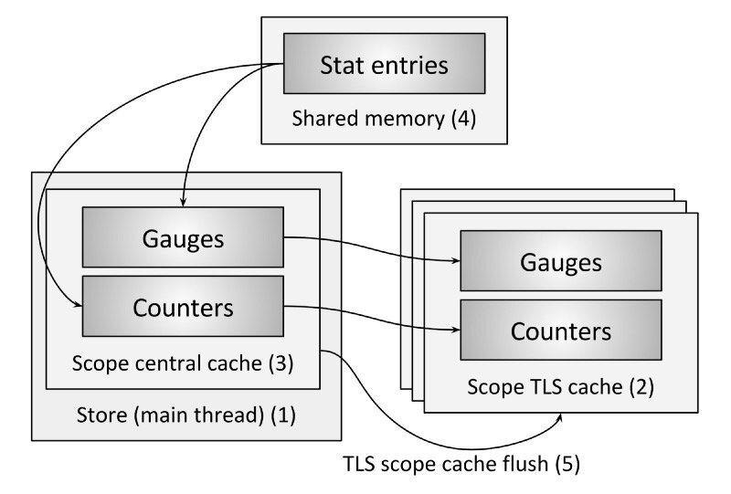

这是我在Envoy架构系列中的第3篇文章。这篇文章基于以前关于Envoy的线程模型和热重启功能的帖子。如果您还没有阅读这些帖子，请先阅读。 需要指出的是，随着预演的结束，我们现在可以进入更有趣的话题！
统计概述
到目前为止，Envoy所做的最重要的事情是为分布式系统的可观测性提供了一个健壮的平台。这包括统计数据、日志记录和分布式跟踪。这篇文章将集中在统计数据和Envoy是如何实现允许高容量的同时保持卓越性能的。Envoy目前支持三种不同的统计数据:
- Counter（计数器）：只能增加不会减少的无符号整数。 例如，总请求。
- Gauge（计量）：可以同时增加和减少的无符号整数。 例如，目前有效的请求。
- Timer/hitogram（计时器/直方图）：无符号整数，最终将产生汇总百分位值。Envoy不区分计时器（通常以毫秒为单位）和原始直方图（可以是任何单位）。 例如，上游请求时间（以毫秒为单位）。
Envoy目前不支持任何浮点统计数据。

Envoy统计子系统的总体目标如下：
-
粗略的线性吞吐量：可以与任意数量的工作线程一起扩展。另一种说法是:在稳定状态下，使用stats时应该没有跨线程争用。
-
在使用热重启时，状态应该在逻辑上保持一致。这意味着即使有两个Envoy进程在运行，当逻辑上认为是单个进程时，所有计数器、量规和直方图都应该是一致的。（有关这方面的更多信息，请参阅热重启这篇文章）。
-
统计数据应该包含在作用域内并作为一个组释放。作用域是具有公共前缀的统计数据的逻辑分组。例如:
http.admin.*。这一点很重要，因为Envoy具有动态性。Envoy支持各种管理API，如监听器发现服务（LDS）和集群发现服务（CDS） API。为了不耗尽内存，Envoy需要清理不再使用的统计数据。 -
统计范围应该能够重叠和正确的引用计数。这意味着如果作用域A使用一个名为
foo.bar.baz的属性，作用域B也使用foo.bar.baz属性，那么foo.bar.baz的属性的引用计数应该是2。这对于热重启（两个进程将在一段时间内写入相同的统计数据）和动态管理API（在一段时间内，更新的监听器或集群将引用与旧监听器或集群相同的统计数据）都是必需的。 -
统计数据子系统应该能够很好地执行直到数据平面处理开始时才知道的统计信息。许多统计数据本质上是“固定的”，可以在加载配置或动态API重新配置数据平面时创建（例如，
cluster.foo.upstream_rq_5xx）。这些都是低频事件。其他统计信息，例如详细的HTTP响应代码度量（例如，cluster.foo.upstream_rq_503），在数据开始流动之前都不知道。使用“动态”的统计数据永远不会像使用“固定”的统计数据那样快，但是即使在处理每个内核每秒数千个请求的10次时，性能仍然应该是足够的。
作为一个整体，上述目标需要一个复杂的系统来满足。我们现在将深入研究这个系统是如何工作的。
数据架构

存储
stat存储是Envoy内部的一个单例对象，并提供了一个简单的接口，通过该接口，其余代码可以获得作用域、计数器、计量和直方图的句柄。调用代码负责维护所有创建的作用域的所有权语义。当作用域被销毁时，所有包含的统计数据的引用计数都会减少1。如果任何统计数据达到0引用计数，它们将被释放。
统计数据
如前所述，统计数据包括计数器、量规和直方图。从终端用户的角度来看，这些接口使用起来非常简单。例如，计数器和计量都包括inc()和dec()方法，而只有计量包括set()方法。程序员看不到任何潜在的存储复杂性。
Flusher
为了获得高性能，使用原子CPU指令在内部缓冲所有的状态变化。在可配置的间隔内，所有计数器和计量都被冲到flusher中。注意，在当前的架构中，直方图值直接发送到接收器。下面将更详细地描述这一点。Flusher在main线程中运行。
Sink
统计数据接收器是一个接口，它接受通用的统计数据并将其转换为特定于后端的连线格式。所有接收器都使用TLS，这样在刷新输出时就不会出现争用。然而，在实践中，目前只有主线会冲掉计数器和量规。所有线程都刷新直方图。
目前Envoy只支持TCP和UDP statsd协议。statsd是一种非常简单但得到广泛支持的传输格式。在未来，很可能会实现其他本地统计数据接收器，如Prometheus、Wavefront和 InfluxDB。还要注意Envoy目前不支持维度或标签统计。这将在下面的工作部分中进一步讨论。
Admin
从操作的角度来看，能够实时地到达一个节点并转储当前状态是非常有用的。Envoy可以通过/stats管理端点实现此功能。管理端点直接查看存储库以加载所有计数器和计量并打印它们。这个端点目前不输出任何直方图数据。这同样是由于在当前的实现中直方图值是直接写入接收器的，因此存储不知道它们。
直方图的架构
正如已经多次提到的，Envoy目前不维护进程内直方图数据。除了开发效率之外，没有什么特别的原因；Lyft使用的statsd摄取管道提供了自己的直方图支持，并希望直方图值直接发送到它。因此，直方图值目前不能通过管理端点查看。未来我们很可能直接在Envoy内部实现HDR直方图。这一点将在下面进一步讨论。
线程本地热重启的能力存储
以上所有的背景都完成了，现在是时候深入到有趣的部分：实践中是如何工作的?
统计项
- Name：完全解析的属性名，例如
http.admin.downstream_cx_active。目前限制为128个字符。 - Value：属性的当前值。该数据包含量具的当前值和计数器的当前总价值。所有的数据写操作都使用原子操作，所以它们在多线程环境下是安全的。
- Pending increment：此数据仅供计数器使用。除了值之外，每个增量都是原子式的。之所以这样做，是因为大多数统计数据接收器想要获取刷新之间的增量而不是总数。因此，在冲洗期间计数器是锁住的。挂起的增量被写入计数器，然后归零。
- Flags：目前只支持标志
used。这表示如果统计数据被写过，那么代码能够区分零和从未写过。Envoy不会刷新从来没有使用过的统计数据，以避免压倒性的统计后端很少使用的统计数据。 - Ref count：Ref count允许重叠范围（可能在多个进程中）使用相同的底层统计数据。只有当ref计数为0时，才释放统计数据内存供将来使用。
存储

- 该存储是单例存储，整个Envoy流程都使用它。所有的范围、计数器和标准引用都是从这个单例中心存储库获得的。（本节将不介绍直方图，因为目前直方图不重要，直接刷新到TLS 统计数据接收器）。
- 当线程试图通过作用域获取计数器或量规时，它首先在作用域TLS缓存中按名称查找计数器或量规。如果在缓存中找到了统计数据，它将立即返回给调用者，而不需要任何锁定。如果没有找到该属性，则必须从范围中央缓存中获取该属性。
- 范围中央缓存通过标准进程范围内的互斥锁锁定（在稳定状态下，它不应该被高度竞争，因为统计信息将在范围TLS缓存中找到）。如果在中心缓存中找到了统计数据，那么它将返回到TLS缓存，在那里存储它以供以后无锁查找。如果在中央缓存中没有找到该属性，则必须从共享内存中分配该属性。
- 共享内存包含一系列固定的个人统计条目（图2）。Envoy包含一个非常基本的分配器，搜索统计条目名称相同的槽(支持热重启和重叠范围)或一个空位置,选择初始化槽如果目前空,增加引用计数,并返回它。这是在热重启期间跨进程统计数据的工作方式。两个进程都将从共享内存中分配一个统计数据条目槽，但是其中一个进程最终将引用计数增加到两个（相同的进程在重叠作用域创建期间发生）。如果在共享内存中找不到空间，Envoy将增加一个“panic”属性并返回一个特殊的溢出属性槽，以便进程可以在降级状态下继续运行。一旦一个统计数据槽被分配，它就被包装在一个进程本地数据结构中，存储在范围中心缓存中，存储在范围TLS缓存中，然后最终返回给调用者。
- 回想一下，stat子系统的目标之一是使作用域安全可删除。作用域是全局对象，由主线程和单例存储管理。删除作用域时，不同线程上的作用域TLS缓存可能持有对单个统计数据的引用。为了说明这一点，“作用域缓存刷新”事件通过TLS发送到每个线程。线程使用线程模型文章中描述的类似RCU的行为释放所有对作用域统计的引用。一旦计数器或表的最后一次引用计数被减少，共享内存统计项插槽也被释放。这是通过在统计数据条目插槽上减少引用计数来完成的。如果这个引用计数现在为零，那么这个槽就被完全释放了，并且可以被任何进程用于一个新的状态。如果前面的描述有点混乱，总结一下：Envoy中的所有统计数据都由两个引用计数控制。第一个引用计数用于进程内TLS缓存的状态，第二个引用用于多个进程共享的备份状态入口槽。
回顾一下，让我们看看上面的设计如何满足所有的原始目标：
- 线性吞吐量：在稳定状态下，所有的统计数据分配都通过作用域TLS缓存进行。对于大量的工作线程来说这要求不能加锁。
- 在热重新启动期间逻辑上是一致的：最终，所有同名的数据在共享内存中使用相同的备份存储。这在流程之间创建了逻辑一致性。
- 统计数据包含在一个作用域内，可以作为一个组释放，也可以重叠：作用域具有完全独立的中央缓存和TLS缓存，以及独立的每个统计数据引用计数。一个作用域可以被移除，并且它的所有统计数据的引用计数将会减少，并且可能会被释放。
- 足够的动态统计数据性能：通过范围TLS缓存查找动态统计数据并使用O(1)哈希表。
未来的工作
虽然Envoystats子系统工作得很好，但是有几个方面在未来可以改进:
- 维度/标记状态: 大多数更新的状态后端支持维度/标记，而不仅仅是一个扁平的层次命名空间。在特使统计数据的某些区域中，这是很有用的。短期而言，我们可能会添加全球标记支持，作为支持它的后端（如Prometheus、Wavefront和流感数据库）的第一步。
- 线程本地原子缓存: 在worker数量和吞吐量极高的情况下，单个stat值上的原子争用将成为一个问题。这可以通过移动到TLS计数器和压力表来解决，这些计数器和压力表在冲洗之前被聚集到中央存储中。
- 内置的HDR直方图: 由于几个原因（管理输出、基于异常值的延迟检测和没有内置直方图支持的接收器），向Envoy添加直接的HDR直方图支持将非常有用。
- 额外的静态接收器: 如前所述，我们希望直接支持更多的后端，如Prometheus、Wavefront、InfluxDB等。幸运的是，接收器接口很简单，添加新的实现并不困难。
结论
为了满足上述目标，Envoy的数据统计子系统的设计是新颖的。到目前为止，它在实践中表现得非常好，对于其他用例来说，扩展起来应该相对容易。
代码链接
本文中涉及到的一些接口及实现的头文件请参考下面链接: